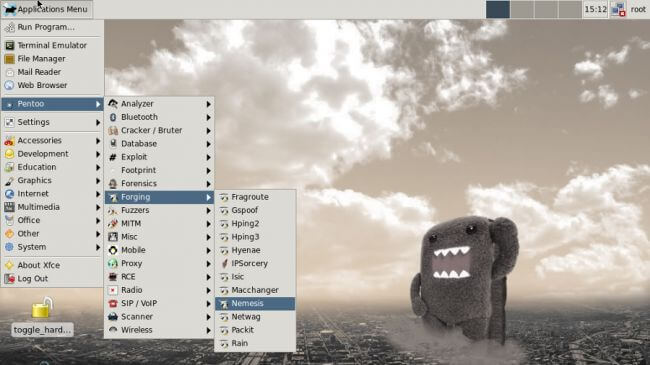

Pentoo

Доступный для 32-битных и 64-битных машин, Pentoo является дистрибутивом для тестирования вторжений, который основан на Gentoo Linux. Пользователи Gentoo могут дополнительно устанавливать Pentoo, который будет инсталлироваться поверх основной системы. Дистрибутив основан на XFCE и поддерживает сохранение изменений, поэтому при отключении USB-носителя, все примененные изменения будут сохранены для будущих сессий.
Встроенные инструменты делятся на 15 различных категорий, например, Exploit, Fingerprint, Cracker, Database, Scanner и т.д. Будучи основанным на Gentoo, дистрибутив унаследовал набор защитных функций Gentoo, которые позволяют выполнять дополнительные настройки безопасности и более детально управлять дистрибутивом. Вы можете использовать утилиту Application Finder для быстрого обнаружения приложений, расположенных в различных категориях.
Поскольку дистрибутив основан на Gentoo, потребуется выполнить некоторые манипуляции, чтобы заставить работать сетевую карту и другие аппаратные компоненты. При загрузке выберите опцию проверки и настройте все ваши устройства.